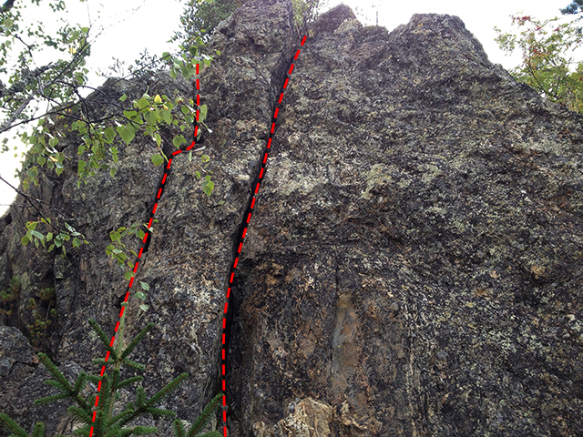

GPS: 63.9959125627964,20.0265312194824
Lite skräpig klippa som torkar snabbt om våren. Klippan ligger i en gryta som gör att det bildas ett mikroklimat, där det blir mycket varmt och ofta vindstilla. Solen ligger på från morgonen och fram till 16:00. Klippan erbjuder ett stort antal topprepsleder, och några bultade turer, samt några som är möjliga att göra på kil.
Ny väg upp till Vallberget! Det är numera förbjudet att gå via det gula huset. Läs mer här:
Väggen mot sjön, nedanför fikaplatsen på toppen. Väggen nås lättast genom att fira ner från fikaplatsen, alternativt genom scrambling nedifrån. Man kan även nå väggen genom klättring på huvudväggens fortsättning nedåt, nedanför/till höger om Linkan Special. Östra väggen bjuder på lätt tradklättring och har god möjlighet för nyturer.
Det har klättrats på denna vägg under 70- och 80-talet men vad vi har kunnat hitta så finns inga ledbeskrivningar kvar.
Kategori:Västerbotten
Kategori:sport Kategori:vertikalt
Copyright (C) Permission is granted to copy, distribute and/or modify this document under the terms of the GNU Free Documentation License, Version 1.3